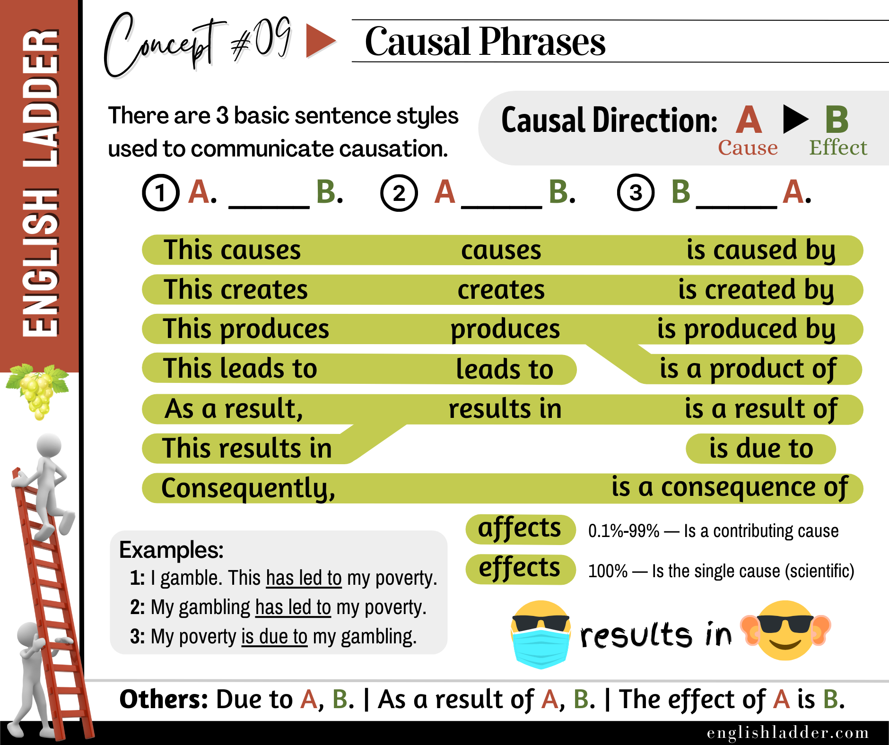

Item 01
The heavy rain __________ flooding in the area.
Reveal answer
a) causes
Grammar Concepts #09
This rebuilt lesson keeps the original concept image, tightens the structure, and turns the explanation into a clearer self-study guide.

Causal phrases are used to communicate the cause and effect relationship between two actions or events. This concept is essential for conveying how one event leads to another. There are three basic sentence styles used to express causation:
Let’s explore the different ways to express causation in English, as illustrated in the image.
In this structure, the first event (A) causes the second event (B). This is a direct way to show causation.
In this structure, the second event (B) is the cause of the first event (A). This is useful for emphasizing the cause.
This structure is less common but still important. It is often used in scientific or technical contexts to describe results.
Understanding and using causal phrases correctly helps in clearly conveying the cause and effect relationship in sentences. This is particularly important in both spoken and written English for explaining processes, giving reasons, and discussing results. By practicing these structures, non-native speakers can improve their ability to express complex ideas effectively.
By practicing these exercises, you can become more comfortable with expressing causation in English.
Answer the quiz questions below with the best causal terms. (For some items, both options may be correct.)
The heavy rain __________ flooding in the area.
a) causes
Flooding in the area __________ the heavy rain.
b) is caused by
Lack of exercise __________ obesity.
a) leads to
Obesity __________ lack of exercise.
b) is a product of
Pollution __________ health problems.
a) creates
Health problems __________ pollution.
b) are created by
The new policy __________ positive outcomes for the company.
a) produces
Positive outcomes for the company __________ the new policy.
b) are produced by
Hard work __________ success.
a) leads to
Success __________ hard work.
b) is a result of
The accident __________ traffic delays.
a) results in
Traffic delays __________ the accident.
b) are a result of
The team worked hard. __________, they won the championship.
a) As a result
The championship win __________ the team’s hard work.
a) is a result of
The company’s failure to innovate __________ bankruptcy.
a) results in
The bankruptcy __________ the company’s failure to innovate.
b) is due to
Global warming __________ more extreme weather conditions.
a) causes
More extreme weather conditions __________ global warming.
b) are a consequence of
The pollution __________ health problems in the city.
a) leads to
Health problems in the city __________ pollution.
b) are led by
The lack of funding __________ the project’s failure.
a) results in
The project’s failure __________ the lack of funding.
b) is a result of
The new technology __________ increased productivity.
a) produces
Increased productivity __________ the new technology.
b) is produced by